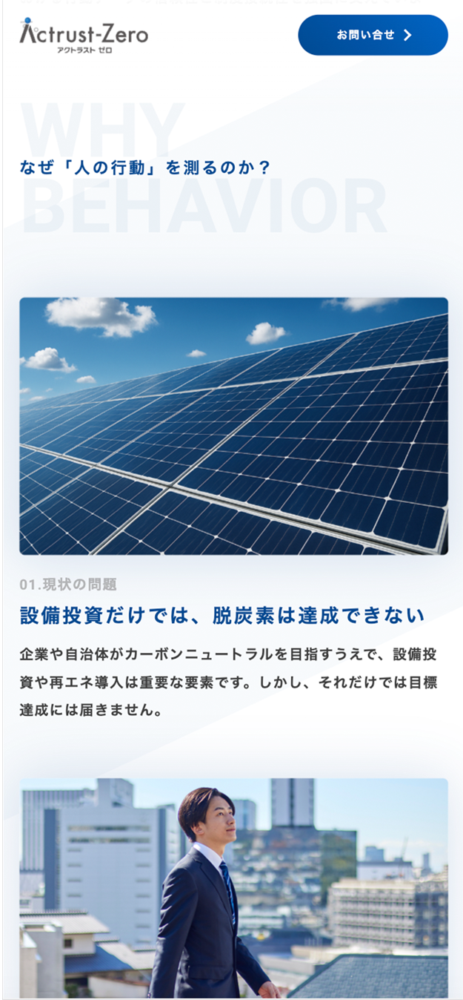
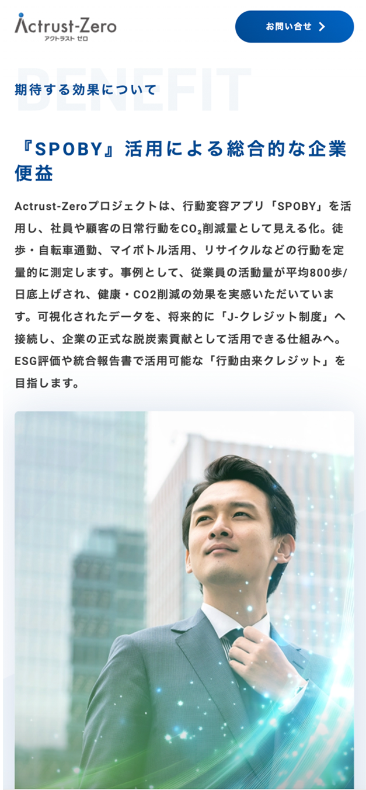
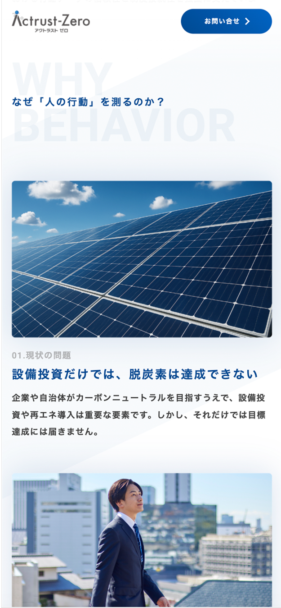
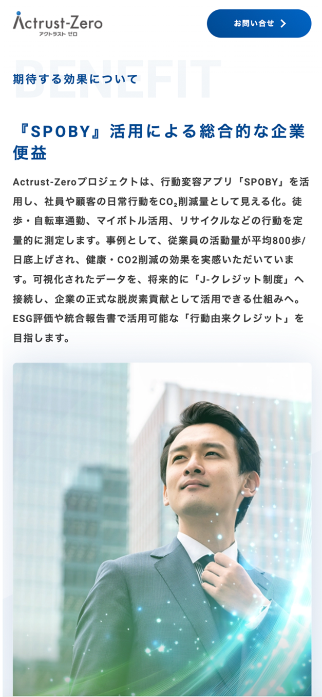
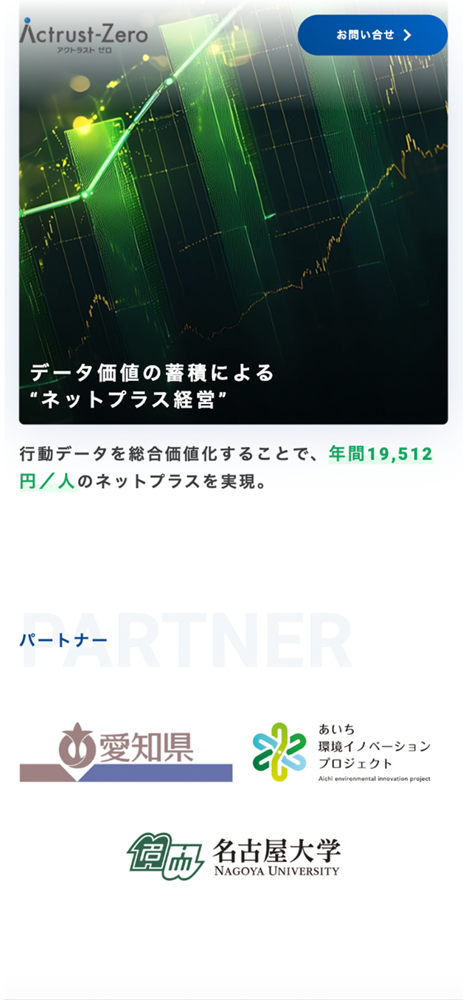
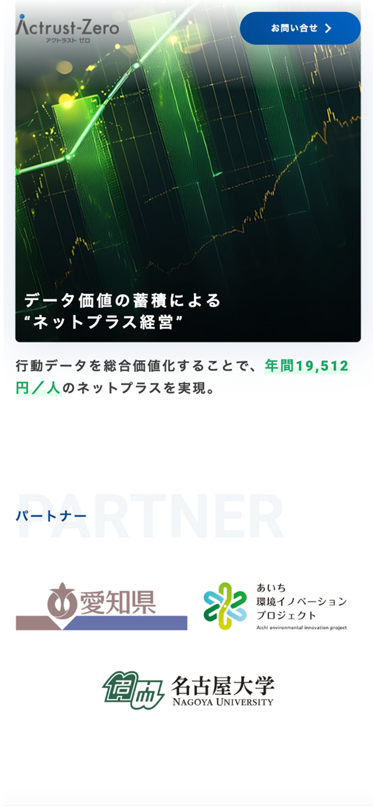

Actrust-Zero LPサイト
制作背景・意図
- 【概要】
-
- 制作物種別 : サービス紹介サイト（Webサイト）
- 対象ページ : Actrust-Zero サービス紹介ページ
- サイト内容 : Actrust-Zeroのコンセプトおよび価値提案の紹介/人の行動データを活用した脱炭素プラットフォームの仕組み説明/行政採用実績やパートナー情報の掲載/企業向けに期待される効果・活用価値の提示/問い合わせフォームへの導線設計
- アプリ（SPOBY）について :
「SPOBY」は人の活動による脱炭素・健康増進を実現するアプリです。ユーザーはアプリを利用して活動を行うことでポイントを獲得でき、貯まったポイントはアプリ内に掲載されている様々なリワードと頑張ったご褒美として交換・獲得することができます。
- 【制作目的】
-
- Actrust-Zeroは、人の行動データを起点とした脱炭素プラットフォームという新しい概念を扱うサービスであるため、その価値や仕組みを企業・行政関係者に正しく理解してもらうことを目的として制作しました。また、問い合わせにつながる導線を設けることで、サービス理解から具体的なアクションへとつなげることも目的としています。
- 【制作時に重視したポイント】
-
- 専門性の高い内容であっても読み進めやすくなるよう、サービスの背景・仕組み・期待される効果といった情報をセクションごとに分解し、情報の流れを整理しました。「なぜ人の行動を測るのか」という問いから入り、課題提示、解決手段、導入効果へと順序立てて構成することで、初見の閲覧者でも理解しやすい導線を意識しています。また、企業や行政担当者が必要な情報に迷わずたどり着けるよう、各セクションの役割が明確に伝わる構成としました。
- 【デザイン上の工夫点】
-
- キービジュアルには、ビジネスシーンと未来感を想起させる写真やグラフィックを用い、Actrust-Zeroが目指す「行動の価値化」や「データの資産化」といったコンセプトを視覚的に表現しました。また、抽象的になりがちなサービス構造については、図解やビジュアル要素を取り入れることで、テキストだけに頼らず直感的に理解できるデザインとしています。全体のトーンは信頼感を重視し、青を基調とした配色と十分な余白を用いることで、情報量が多い中でも落ち着いて読み進められるUIを設計しました。加えて、CTAボタンは常に視認しやすい位置に配置し、スクロール後も問い合わせ行動につながりやすいデザインとしています。


 



 
